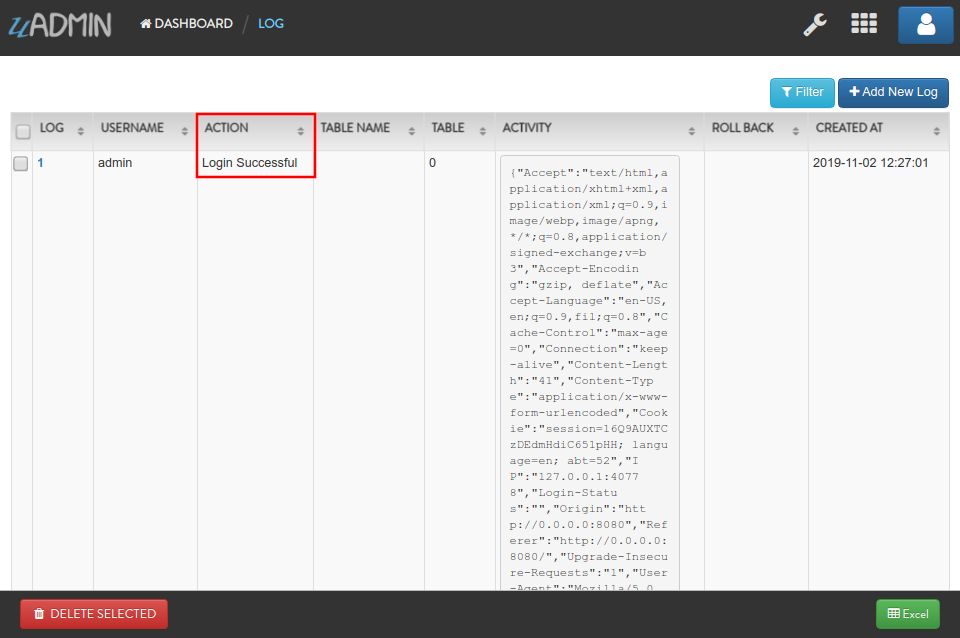
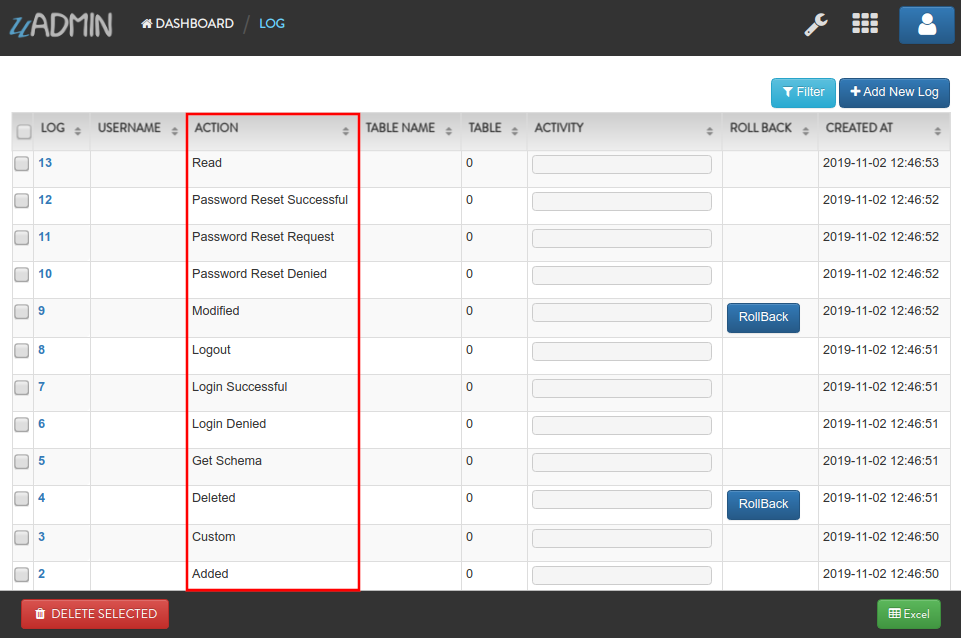

Log Functions¶
In this section, we will cover the following functions in-depth listed below:
uadmin.Action¶
type Action int
Action is the process of doing something where you can check the status of your activities in the uAdmin project.
There are 12 types of actions:
Added - Saved a new record
Custom - For any other action that you would like to log
Deleted - Deleted a record
GetSchema - Opened the full schema of the model
LoginDenied - User invalid login
LoginSuccessful - User login
Logout - User logout
Modified - Save an existing record
PasswordResetDenied - A password reset attempt was rejected
PasswordResetRequest - A password reset was received
PasswordResetSuccessful - A password was reset
Read - Opened a record
Open “LOGS” in the uAdmin dashboard. You can see the Action field inside it as shown below.
Now go to the main.go. Let’s add each methods of actions in the log.
func main(){
// Some codes
for i := 0; i < 12; i++ {
// Initialize the log model
log := uadmin.Log{}
// Call each methods of action based on the specific loop count
switch i {
case 0:
log.Action = uadmin.Action(0).Added()
case 1:
log.Action = uadmin.Action(0).Custom()
case 2:
log.Action = uadmin.Action(0).Deleted()
case 3:
log.Action = uadmin.Action(0).GetSchema()
case 4:
log.Action = uadmin.Action(0).LoginDenied()
case 5:
log.Action = uadmin.Action(0).LoginSuccessful()
case 6:
log.Action = uadmin.Action(0).Logout()
case 7:
log.Action = uadmin.Action(0).Modified()
case 8:
log.Action = uadmin.Action(0).PasswordResetDenied()
case 9:
log.Action = uadmin.Action(0).PasswordResetRequest()
case 10:
log.Action = uadmin.Action(0).PasswordResetSuccessful()
default:
log.Action = uadmin.Action(0).Read()
}
// Add the method to the logs
log.Save()
}
}
Once you are done, rebuild your application. Check your “LOGS” again to see the result.
As expected, all types of actions were added in the logs. Good job man!
More examples of this function can be found in uadmin.Log.
Quiz:
uadmin.HTTPLogFormat¶
// Type: string
var HTTPLogFormat = "%a %>s %B %U %D"
HTTPLogFormat is the format used to log HTTP access.
Format:
%a: Client IP address
%{remote}p: Client port
%A: Server hostname/IP
%{local}p: Server port
%U: Path
%c: All coockies
%{NAME}c: Cookie named 'NAME'
%{GET}f: GET request parameters
%{POST}f: POST request parameters
%B: Response length
%>s: Response code
%D: Time taken in microseconds
%T: Time taken in seconds
%I: Request length
uadmin.Log¶
type Log struct {
Model
Username string `uadmin:"filter;read_only"`
Action Action `uadmin:"filter;read_only"`
TableName string `uadmin:"filter;read_only"`
TableID int `uadmin:"filter;read_only"`
Activity string `uadmin:"code;read_only" gorm:"type:longtext"`
RollBack string `uadmin:"link;"`
CreatedAt time.Time `uadmin:"filter;read_only"`
}
Log is a system in uAdmin that is used to add, modify, and delete the status of the user activities.
There are 12 types of actions:
Added - Saved a new record
Custom - For any other action that you would like to log
Deleted - Deleted a record
GetSchema - Opened the full schema of the model
LoginDenied - User invalid login
LoginSuccessful - User login
Logout - User logout
Modified - Save an existing record
PasswordResetDenied - A password reset attempt was rejected
PasswordResetRequest - A password reset was received
PasswordResetSuccessful - A password was reset
Read - Opened a record
There are 5 functions that you can use in Log:
ParseRecord - It means to analyze a record specifically. It uses this format as shown below:
func(a reflect.Value, modelName string, ID uint, user *User, action Action, r *http.Request) (err error)
Parameters:
a reflect.Value: An interface initialized in NewModel function
modelName string: The name of the model in lowercase letters
ID uint: The ID of the model
user *User: What account is using in the session
action Action: An activity status
r *http.Request: A data structure that represents the client HTTP request
Go to Example #2: ParseRecord function to see how ParseRecord works.
PasswordReset - It keeps track when the user resets his password. It uses this format as shown below:
func(user string, action Action, r *http.Request) (err error)
Parameters:
user string: An account username
action Action: An activity status
r *http.Request: A data structure that represents the client HTTP request
Go to Example #3: PasswordReset function to see how PasswordReset works.
Save() - Saves the object in the database
SignIn - It keeps track when the user signs in his account. It uses this format as shown below:
func(user string, action Action, r *http.Request) (err error)
Parameters:
user string: An account username
action Action: An activity status
r *http.Request: A data structure that represents the client HTTP request
Go to Example #4: SignIn function to see how SignIn works.
String() - Returns the Log ID
Examples:
Page:
Quiz:
uadmin.LogAdd¶
// Type: bool
var LogAdd = true
LogAdd adds a log when a record is added.
To assign a value within an application, visit Log Add page for an example.
To assign a value in the code, follow this approach:
Go to the main.go and apply this function to “true”. Put it above the uadmin.Register.
func main() {
// NOTE: This code works only on first build.
uadmin.LogAdd = true
// ----- IF YOU RUN YOUR APPLICATION AGAIN, DO THIS BELOW -----
// Assign the Log Add value to true
setting := uadmin.Setting{}
uadmin.Get(&setting, "code = ?", "uAdmin.LogAdd")
setting.ParseFormValue([]string{"true"})
setting.Save()
uadmin.Register(
// Some codes
)
Run your application and go to “LOGS” model.

Suppose that you have this record in your logs as shown below:

Go back to uAdmin dashboard then select “TODOS”.

Click “Add New Todo”.

Input the name value in the text box (e.g. Read a book). Click Save button afterwards.

Result

Now go back to the “LOGS” to see the result.

Exit your application for a while. Go to the main.go once again. This time, apply this function to “false”.
func main() {
// Assign the Log Add value to false
setting := uadmin.Setting{}
uadmin.Get(&setting, "code = ?", "uAdmin.LogAdd")
setting.ParseFormValue([]string{"false"})
setting.Save()
uadmin.Register(
// Some codes
)
Rebuild and run your application. Go to “TODOS” model and add another data inside it.

Result

Now go back to the “LOGS” to see the result.

As you can see, the log content remains the same. Well done!
See uadmin.LogRead for the continuation.
uadmin.LogDelete¶
// Type: bool
var LogDelete = true
LogDelete adds a log when a record is deleted.
To assign a value within an application, visit Log Delete page for an example.
To assign a value in the code, follow this approach:
Before you proceed to this example, see uadmin.LogEdit.
Go to the main.go and apply the LogDelete function to “true”. Put it above the uadmin.Register.
func main() {
uadmin.LogAdd = false
uadmin.LogRead = false
uadmin.LogEdit = false
// NOTE: This code works only on first build.
uadmin.LogDelete = true
// ----- IF YOU RUN YOUR APPLICATION AGAIN, DO THIS BELOW -----
// Assign the Log Delete value to true
setting := uadmin.Setting{}
uadmin.Get(&setting, "code = ?", "uAdmin.LogDelete")
setting.ParseFormValue([]string{"true"})
setting.Save()
uadmin.Register(
// Some codes
)
Run your application and go to “LOGS” model.
Suppose that you have this record in your logs as shown below:

Go back to uAdmin dashboard then select “TODOS”.
Select any of your existing data that you wish to delete (e.g. Washing the dishes)

Now go back to the “LOGS” to see the result.

Exit your application for a while. Go to the main.go once again. This time, apply the LogDelete function to “false”.
func main() {
uadmin.LogAdd = false
uadmin.LogRead = false
uadmin.LogEdit = false
// Assign the Log Delete value to false
setting := uadmin.Setting{}
uadmin.Get(&setting, "code = ?", "uAdmin.LogDelete")
setting.ParseFormValue([]string{"false"})
setting.Save()
uadmin.Register(
// Some codes
)
Rebuild and run your application. Go to “TODOS” model and delete the remaining data (e.g. Read a book).

Now go back to the “LOGS” to see the result.

As you can see, the log content remains the same. Well done!
Quiz:
uadmin.LogEdit¶
// Type: bool
var LogEdit = true
LogEdit adds a log when a record is edited.
To assign a value within an application, visit Log Edit page for an example.
To assign a value in the code, follow this approach:
Before you proceed to this example, see uadmin.LogRead.
Go to the main.go and apply the LogEdit function to “true”. Put it above the uadmin.Register.
func main() {
uadmin.LogAdd = false
uadmin.LogRead = false
// NOTE: This code works only on first build.
uadmin.LogEdit = true
// ----- IF YOU RUN YOUR APPLICATION AGAIN, DO THIS BELOW -----
// Assign the Log Edit value to true
setting := uadmin.Setting{}
uadmin.Get(&setting, "code = ?", "uAdmin.LogEdit")
setting.ParseFormValue([]string{"true"})
setting.Save()
uadmin.Register(
// Some codes
)
Run your application and go to “LOGS” model.
Suppose that you have this record in your logs as shown below:

Go back to uAdmin dashboard then select “TODOS”.
Select any of your existing data (e.g. Build a robot)

Change it to “Assembling the CPU” for instance.

Result

Now go back to the “LOGS” to see the result.

Exit your application for a while. Go to the main.go once again. This time, apply the LogEdit function to “false”.
func main() {
uadmin.LogAdd = false
uadmin.LogRead = false
// Assign the Log Edit value to false
setting := uadmin.Setting{}
uadmin.Get(&setting, "code = ?", "uAdmin.LogEdit")
setting.ParseFormValue([]string{"false"})
setting.Save()
uadmin.Register(
// Some codes
)
Rebuild and run your application. Go to “TODOS” model and modify any of your existing data (e.g. Assembling the CPU).
Change it to “Washing the dishes” for instance.

Result

Now go back to the “LOGS” to see the result.
As you can see, the log content remains the same. Well done!
See uadmin.LogDelete for the continuation.
uadmin.LogHTTPRequests¶
// Type: bool
var LogHTTPRequests = true
LogHTTPRequests logs http requests to syslog.
uadmin.LogRead¶
// Type: bool
var LogRead = false
LogRead adds a log when a record is read.
To assign a value within an application, visit Log Read page for an example.
To assign a value in the code, follow this approach:
Before you proceed to this example, see uadmin.LogAdd.
Go to the main.go and apply the LogRead function to “true”. Put it above the uadmin.Register.
func main() {
uadmin.LogAdd = false
// NOTE: This code works only on first build.
uadmin.LogRead = true
// ----- IF YOU RUN YOUR APPLICATION AGAIN, DO THIS BELOW -----
// Assign the Log Read value to true
setting := uadmin.Setting{}
uadmin.Get(&setting, "code = ?", "uAdmin.LogRead")
setting.ParseFormValue([]string{"true"})
setting.Save()
uadmin.Register(
// Some codes
)
Run your application and go to “LOGS” model.
Suppose that you have this record in your logs as shown below:
Go back to uAdmin dashboard then select “TODOS”.
Select any of your existing data.
Result
Now go back to the “LOGS” to see the result.

Exit your application for a while. Go to the main.go once again. This time, apply the LogRead function to “false”.
func main() {
uadmin.LogAdd = false
// Assign the Log Read value to false
setting := uadmin.Setting{}
uadmin.Get(&setting, "code = ?", "uAdmin.LogRead")
setting.ParseFormValue([]string{"false"})
setting.Save()
uadmin.Register(
// Some codes
)
Rebuild and run your application. Go to “TODOS” model and add select any of your existing data.
Result
Now go back to the “LOGS” to see the result.
As you can see, the log content remains the same. Well done!
See uadmin.LogEdit for the continuation.
uadmin.Syslogf¶
// For Mac / Linux
func(level int, msg string, a ...interface{})
// For Windows
func(level int, msg string, a ...interface{}) error
Syslogf records a log in the system in syslog. For Windows it created a file and records the logs there.
uadmin.TrailLoggingLevel¶
// Type: int
var TrailLoggingLevel = INFO
TrailLoggingLevel is the minimum level to be logged into syslog.